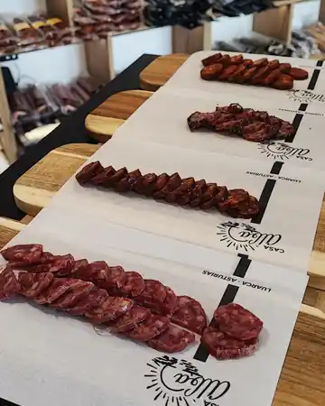
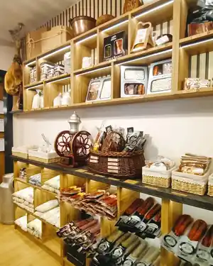
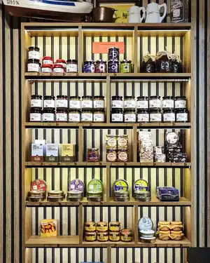
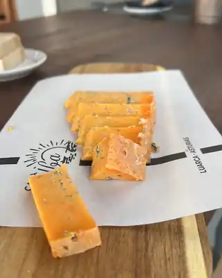

Luarca · Comarca Vaqueira · Occidente de Asturias
Productos artesanos del occidente de Asturias, elegidos con cercanía y con la menor huella de carbono posible. Lo de siempre, hecho como siempre.


Sobre nosotros
Casa Alba nació para acercar los productos del occidente de Asturias a quien los quiere de verdad: sin vueltas, sin intermediarios y sin perder el trato de toda la vida. Trabajamos con productores de Luarca y la Comarca Vaqueira que cuidan lo que hacen igual que lo hacían sus padres.
Cada producto que entra por la puerta tiene detrás una historia y una persona con nombre y apellidos. Eso es lo que intentamos que se note en cada compra.
Lo que encontrarás
Elaboraciones de pequeños productores del occidente asturiano, cortadas al momento.
Chorizo, chosco y curados hechos con recetas de siempre, sin prisa y sin atajos.
Bonito, caballa y conservas de la costa cantábrica, del puerto a la despensa.
Miel y mermeladas artesanas de temporada, hechas en pequeñas producciones.
Fabes de la granja y legumbre de la zona, seleccionada a mano.
Lotes preparados con producto de la zona, listos para regalar o llevarte a casa.
Así es la tienda

Todo con su precio a la vista y ordenado por productor, para que sepas siempre qué te llevas.

El queso y el embutido se cortan delante de ti, en la cantidad que necesites. Ni más, ni menos.
Por qué comprar aquí
Aquí hablas con quien conoce el producto y a quien lo hace. Te asesoramos de verdad.
Menos transporte, menos huella de carbono y producto que llega en su mejor momento.
Sabemos quién hace cada queso, cada chorizo y cada tarro de miel que vendemos.
Hablemos
Pásate por la tienda en Luarca o escríbenos y te contamos qué tenemos disponible esta semana.
HORARIO — pendiente de confirmar
Abrir en Google Maps